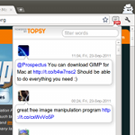
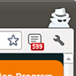

Profile
{kind=link}
{kind=link}
- 稲尾 遊
-
- 1984 年生まれ 27 歳
- 東京下町生まれ下町育ち
- デザインとかも割と好きなプログラマー志望
- 水泳が趣味
- バランスボールに座りながらパソコンに向かう健康オタク
スキル
| 自然言語 | プログラミング言語 | ||
|---|---|---|---|
| 日本語 | ✩✩✩ | Bash | ✩ |
| 英語 | ✩ | CSS | ✩✩ |
| HTML | ✩✩✩ | ||
| JavaScript | ✩ | ||
| Python | ✩ | ||
| OS | アプリケーション | ||
| Mac OS X | ✩✩✩ | GIMP | ✩ |
| Linux | ✩✩ | Inkscape | ✩ |
| Windows | ✩✩✩ | Vim | ✩ |
Smartwiki
- 概要
-
Google App Engine 上で動く 簡易 wiki エンジン。GitHub Wiki のような wiki システムを作ってみたいと思い、作成を始めました。現在は簡易なプロトタイプです。動作サンプルとソースコードを公開しています。
- 時期
-
- 2011 年 9 月
- 環境
-
- Google App Engine
- Python
約 1 週間で作成したプロトタイプです。こだわった部分は、再利用性です。既存の軽量マークアップ言語を wiki 記法に用いいること (= 新しい記法を学習するコストの削減) と HTML テンプレートの記法も既存言語の再利用という点で XML 記法でテンプレートが書ける Genshi を使用しています。
Cloudsn
- 概要
-
Linux GNOME 環境向け Google サービスのデスクトップ通知アプリケーションです。日本語化に貢献しました。以前、日本語化した googsystray の更新が停滞しているので、代替アプリケーションを探す中で見つけました。GitHub でソースコードが公開されています。
- 時期
-
- 2011年 9 月
- 担当
-
GitHub 上で fork したソースコードに pot ファイルから ja.po を作成し、Poedit で日本語化したものをコミットし、マージのリクエストをしました。
- 環境
-
- gettext
- Git
- GitHub
- Poedit
- Python
Sidetalk
 
{kind=link}
- 概要
-
Google Chrome 上で、現在開いている web ページのつぶやきをチェックするエクステンションを作成しました。JavaScript 学習成果として、GitHub 上にてソースコードを公開しています。
- 時期
-
- 2011 年 4 月
- 環境
-
- Google Chrome
- JavaScript
JavaScript の勉強過程で作ってみたいと思い自作したエクステンションです。勉強の意味で jQuery 等のライブラリは使わず、直接 XHR で Topsy API にリクエストを発行し、JSON 形式のレスポンスをパースしたものから Twitter のつぶやきを取得し、HTML/CSS でレイアウトしたものを表示します。
着想は bit.ly のブックマークレットです。このブックマークレットには、短縮 URL を生成する時、backtype を利用した Twitter のつぶやきが表示する機能があります。時折、このつぶやきの中に面白いつぶやきがあった事から、同様のことが出来るブラウザ拡張がほしいと思っていました。
こうして、欲しかったものを自分で作れるようになるのはとても楽しいです。
googsystray
- 概要
-
Jim Duchek 氏による Windows/Linux GNOME 環境向け Google サービスのデスクトップ通知アプリケーションです。公式サイトの翻訳者募集告知を見て、もともと愛用していたこともあり、日本語化に貢献しました。
- 時期
-
- 2010 年 5 月
- 担当
-
作者とコンタクトをとり、gettext による UI メッセージの日本語化を担当させていただきました。Subversion リポジトリからソースコードを取得し、Python のビルドコマンドより pot ファイルを作成し、ja.po の翻訳をしたものをメールでやりとりする形で作業しました。
- 環境
-
- gettext
- Poedit
- Python
- Subversion
- SourceForge.net
Pro Git の翻訳経験を生かし、翻訳作業の中で定訳表を作成しながら進めました。また一般的な語彙は Launchpad を参照したりしながら、標準的な和訳を行うよう心がけて作業しました。
この貢献を通して、gettext を用いた翻訳作業の流れを勉強する事が出来ました。
Pro Git

- 概要
-
Scott Chacon 著作のバージョン管理システム Git の解説書です。Apress より英語版ペーパーバックが発売されており、また公式サイトでは英語版含め各国語翻訳版を無償で読めます。こちらの日本語訳に貢献しました。GitHub にてソースコード公開されています。
- 時期
-
- 2009 年 8 月
- 担当
-
日本国内最初のコミッターとして、Chapter 1 の翻訳に貢献しました。公式サイトにて翻訳者としてクレジットして頂きました。
- 環境
-
- Git
- GitHub
- Markdown
当時の勤め先は、ファイル名の接頭辞を更新日付にして差分管理をするという方法をとっていました。私はもっと良い方法はないかと思い、VCS について調べ始め、そして Git に出会いました。CVS や Subversion を知らなかったせいか、Git は簡単に使い始めることが出来ました。
使い方を調べていく中で、偶然 Pro Git を見つけ、またソースコードが GitHub 上で公開されていた事から、自身の勉強兼ねて翻訳を始めました。その当時はまだ注目度も低かった事もあり、私は結果的に本書の日本語訳最初のコミッターとなりました。
この経験を通して、Git 含め GitHub サービスや軽量マークアップ言語 Markdown などに触れる機会を得て、日常的にこれらを使うようになりました。また Chapter 1 以降の翻訳を担当頂いてる方々には、定訳表の作成を勧めていただいたり、共同翻訳についてご指導頂き、以降の翻訳コミットにあたっての貴重なノウハウを得ることが出来ました。